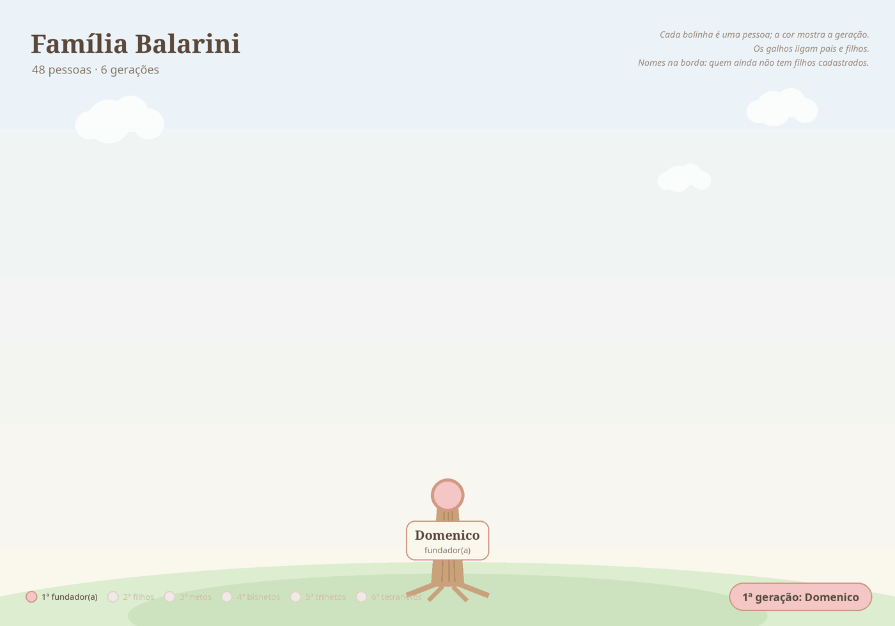
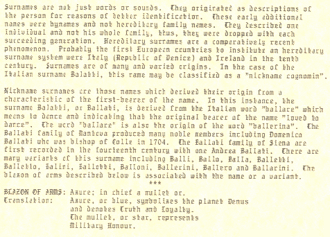

Família Balarini
Família de Domenico Balarini, que se uniu aos Zampirolli e aos Magri no sul do Espírito Santo.
48 pessoas · 6 gerações
A árvore em movimento

Árvore
Fotos


Contexto histórico
Informações sobre lugares e fatos citados acima, pesquisadas em fontes públicas na web. Não são dados pessoais desta pessoa.
Contexto histórico A grande emigração do Vêneto (1875–1914)
Entre 1876 e 1900 mais de cinco milhões de italianos deixaram o país; o Brasil esteve entre os principais destinos. No Vêneto, a principal causa foi a crise agrária provocada pela chegada de trigo barato das Américas e da Rússia, somada à pressão demográfica e à crise da pequena propriedade. Cerca de 1,4 milhão de italianos vieram ao Brasil em 50 anos, a partir de 1874.
Chegada ao Brasil Imigração italiana no Espírito Santo
A imigração italiana para o Espírito Santo começou em 17/02/1874, com a chegada do veleiro La Sofia ao porto de Vitória, trazendo 388 italianos. Entre o fim do século XIX e o início do XX chegaram ao estado cerca de 45 mil italianos, quase todos camponeses, muitos partindo de Gênova. O Arquivo Público do Estado (APEES) mantém o banco de dados "Imigrantes Espírito Santo", com dezenas de milhares de nomes, onde é possível pesquisar as listas de passageiros e pedir certidão de desembarque — útil para a cidadania italiana.